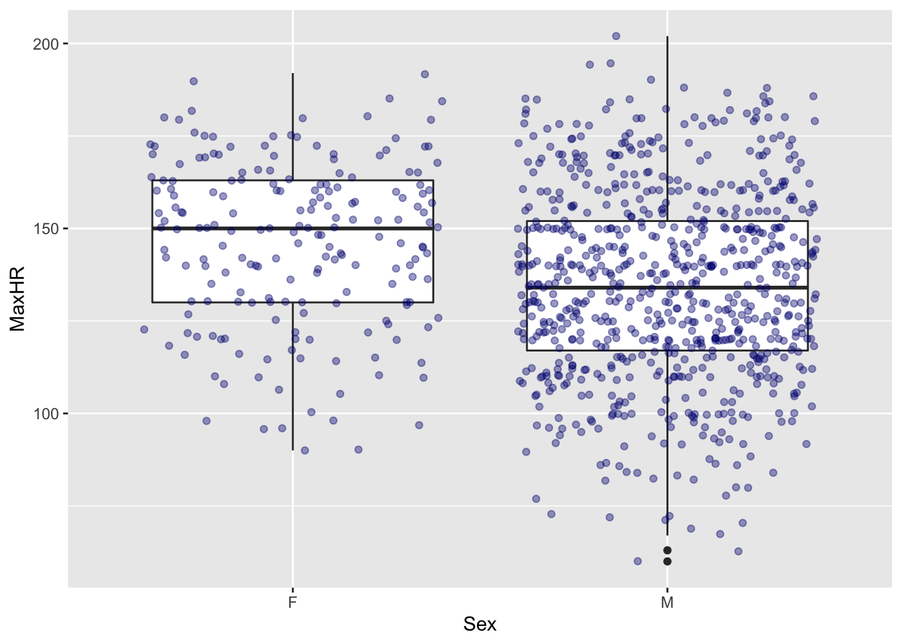

ggplot2
Conociendo 
- Dia del Taller: el 11 de noviembre, 2021
- Recurso: Marijulie Martinez-Lozano, DrPH
- Asociación Académida: Universidad de Puerto Rico Recinto de Ciencia Médica
- Correo electronico: marijulie.martinez@upr.edu
Contenido
- Qué es ggplot2?
- Conceptos básicos de ggplot2
- Gráficas con ggplot2
Enlaces para acceso a los Videos en el Canal de YOUTUBE ANALITICA Fundación
Los sigientes enlaces corresponde a la presentación abajo
Qué es ggplot2?
ggplot2 es un paquete de visualización de datos que nos permite elaborar un gráfico a partir de un proceso de acumulación de capas, mejor conocido como “layers”. A través de ggplot2 podemos realizar gráficas y costomizarlos de acuerdo al público e información que deseemos presentar.
Función básica de ggplot
ggplot(data = )+
(mapping = aes( ))
- ggplot2 crea gráficos a través de capas utilizando funciones geom_.
- “aes”=aesthetics=estética (color, tamaño, ejes)
Instalación de ggplot
"install.packages("ggplot2")" Activación de ggplot2
library (ggplot2)Datos
Datos sacados de: https://www.kaggle.com/fedesoriano/heart-failure-prediction
Los datos se pueden aceder en el siguiente enlace heart-corazon
###Resumen de la base de datos
library(gt)
summary(heart)## Age Sex ChestPainType RestingBP
## Min. :28.00 Length:918 Length:918 Min. : 0.0
## 1st Qu.:47.00 Class :character Class :character 1st Qu.:120.0
## Median :54.00 Mode :character Mode :character Median :130.0
## Mean :53.51 Mean :132.4
## 3rd Qu.:60.00 3rd Qu.:140.0
## Max. :77.00 Max. :200.0
## Cholesterol FastingBS RestingECG MaxHR
## Min. : 0.0 Min. :0.0000 Length:918 Min. : 60.0
## 1st Qu.:173.2 1st Qu.:0.0000 Class :character 1st Qu.:120.0
## Median :223.0 Median :0.0000 Mode :character Median :138.0
## Mean :198.8 Mean :0.2331 Mean :136.8
## 3rd Qu.:267.0 3rd Qu.:0.0000 3rd Qu.:156.0
## Max. :603.0 Max. :1.0000 Max. :202.0
## ExerciseAngina Oldpeak ST_Slope HeartDisease
## Length:918 Min. :-2.6000 Length:918 Min. :0.0000
## Class :character 1st Qu.: 0.0000 Class :character 1st Qu.:0.0000
## Mode :character Median : 0.6000 Mode :character Median :1.0000
## Mean : 0.8874 Mean :0.5534
## 3rd Qu.: 1.5000 3rd Qu.:1.0000
## Max. : 6.2000 Max. :1.0000gt(head(heart))| Age | Sex | ChestPainType | RestingBP | Cholesterol | FastingBS | RestingECG | MaxHR | ExerciseAngina | Oldpeak | ST_Slope | HeartDisease |
|---|---|---|---|---|---|---|---|---|---|---|---|
| 40 | M | ATA | 140 | 289 | 0 | Normal | 172 | N | 0.0 | Up | 0 |
| 49 | F | NAP | 160 | 180 | 0 | Normal | 156 | N | 1.0 | Flat | 1 |
| 37 | M | ATA | 130 | 283 | 0 | ST | 98 | N | 0.0 | Up | 0 |
| 48 | F | ASY | 138 | 214 | 0 | Normal | 108 | Y | 1.5 | Flat | 1 |
| 54 | M | NAP | 150 | 195 | 0 | Normal | 122 | N | 0.0 | Up | 0 |
| 39 | M | NAP | 120 | 339 | 0 | Normal | 170 | N | 0.0 | Up | 0 |
Tipos de gráficas
Histograma: Una variable continua
ggplot(data=heart)+geom_histogram(aes(Age), binwidth = 2)Gráfica de densidad: Una variable continua
ggplot(data=heart)+geom_density(aes(Age))Gráfica de dispersión (scatterplot): Dos variables continuas
ggplot(data=heart)+ geom_point(aes(x=Age, y=MaxHR))Gráfica de dispersión (scatterplot): Dos variables continuas dividida por una variable categórica (versión 1 utilizando “color”)
ggplot(data=heart)+ geom_point(aes(x=Age, y=MaxHR, color=Sex))Gráfica de dispersión (scatterplot): Dos variables continuas dividida por una varaible categórica (versión 2 utilizando “facet_wrap”)
ggplot(data=heart)+ geom_point(aes(x=Age, y=MaxHR, color=Sex))+facet_wrap(~Sex)Gráfica de caja (Boxplot):variables discretas y continuas
ggplot(data=heart)+ geom_boxplot(aes(x=Sex, y=MaxHR))Gráfica de caja (Boxplot):variables discretas y continuas
ggplot(data=heart, aes(x=Sex, y=MaxHR))+ geom_boxplot()+
geom_jitter(alpha = 0.4, color = "navy")
Gráfica de caja (Boxplot): distribución del ritmo cardiaco dividido por tipo de dolor de pecho
- TA=typical angina
- ATA=Atypical Angina
- NAP=Non-Anginal Pain
- ASY= Asymptomatic
ggplot(data=heart)+ geom_boxplot(aes(x=ChestPainType, y=MaxHR))Gráfica de caja (Boxplot): distribución del ritmo cardiaco dividido por tipo de dolor de pecho y sexo
ggplot(data=heart)+ geom_boxplot(aes(x=ChestPainType, y=MaxHR, fill=Sex))El paquete *ggMarginal**
Uso básico de ggMarginal() se puede utilizar para histogramas, boxplot y gráficas de densidad
"install.packages("ggExtra")"library(ggExtra)
ggplot(heart) +
geom_point(aes(x=Age, y=MaxHR, color=Sex))
g1<-ggplot(heart) +
geom_point(aes(x=Age, y=MaxHR, color=Sex))
ggMarginal(g1, type="boxplot")Creación de gráficas interactivas con el paquete plotly
"install.packages("plotly")"ggplot(data=heart) +
geom_point(aes(Age, MaxHR, color=ChestPainType)) +
theme_bw()g2 <- ggplot(data=heart) +
geom_point(aes(Age, MaxHR, color=ChestPainType)) +
theme_bw()
ggplotly(g2)Personalización de gráficas
Etiquetas (“labels”)
"labs(
...,
title = waiver(),
subtitle = waiver(),
caption = waiver(),
tag = waiver()"Etiquetas de los ejes
ggplot(data=heart)+ geom_boxplot(aes(x=ChestPainType, y=MaxHR))
ggplot(data=heart)+ geom_boxplot(aes(x=ChestPainType, y=MaxHR))+
labs(x = "Tipo de dolor de pecho", y="Ritmo cardiaco máximo")Etiquetas del título y subtítulo
ggplot(data=heart)+ geom_boxplot(aes(x=ChestPainType, y=MaxHR))+
labs(x = "Tipo de dolor de pecho", y="Ritmo cardiaco máximo", title="Distribución del ritmo cardiaco máximo por tipo de dolor de pecho", subtitle = "XXX", tag = "Gráfica 1")Como remover las etiquetas
ggplot(data=heart)+ geom_boxplot(aes(x=ChestPainType, y=MaxHR))+
labs(x = NULL , y="Ritmo cardiaco máximo", title="Distribución del ritmo cardiaco máximo por tipo de dolor de pecho", subtitle = "XXX", tag = "Gráfica 1")Temas (themes)
Temas disponibles en ggplot: “theme_classic() theme_bw() theme_dark() theme_minimal() theme_grey()”
ggplot(data=heart)+ geom_boxplot(aes(x=ChestPainType, y=MaxHR))+
labs(x = "Tipo de dolor de pecho", y="Ritmo cardiaco máximo",
title="Distribución del ritmo cardiaco máximo por tipo de dolor de pecho",
subtitle = "XXX", tag = "Gráfica 1")+
theme_grey() 
Apariencia de las etiquetas
- family : tipo de letra
- face : valores posible= “plain”, “italic”, “bold” and “bold.italic”
- colour : color del texto
- size : tamaño del text0
- hjust : horizontal justification (in [0, 1])
- vjust : vertical justification (in [0, 1])
- lineheight : altura de la línea. En texto de varias líneas, el argumento line height se utiliza para cambiar el espacio entre líneas.
ggplot(data=heart)+ geom_boxplot(aes(x=ChestPainType, y=MaxHR))+
labs(x = "Tipo de dolor de pecho", y="Ritmo cardiaco máximo",
title="Distribución del ritmo cardiaco máximo por tipo de dolor de pecho",
subtitle = "XXX", tag = "Gráfica 1")+
theme_classic() + theme(
plot.title = element_text(color="cyan4", size=12, face="bold.italic"),
axis.title.x = element_text(color="darkorange2", size=12, face="bold"),
axis.title.y = element_text(color="darkorange2", size=12, face="bold")
)Color
Existen múltiples paletas de colores, ejemplo:  ”
”
Función de “colour” con colores del sistema
ggplot(data=heart)+ geom_boxplot(aes(x=ChestPainType, y=MaxHR, colour=ChestPainType))+
labs(x = "Tipo de dolor de pecho", y="Ritmo cardiaco máximo",
title="Distribución del ritmo cardiaco máximo por tipo de dolor de pecho",
tag = "Gráfica 1")+
theme_classic()Función de “fill” con colores del sistema
ggplot(data=heart)+ geom_boxplot(aes(x=ChestPainType, y=MaxHR, fill=ChestPainType))+
labs(x = "Tipo de dolor de pecho", y="Ritmo cardiaco máximo",
title="Distribución del ritmo cardiaco máximo por tipo de dolor de pecho",
tag = "Gráfica 1")+
theme_classic() Uso de la función de fill” con colores seleccionados manualmente
ggplot(data=heart)+ geom_boxplot(aes(x=ChestPainType, y=MaxHR, fill=ChestPainType))+
labs(x = "Tipo de dolor de pecho", y="Ritmo cardiaco máximo",
title="Distribución del ritmo cardiaco máximo por tipo de dolor de pecho",
tag = "Gráfica 1")+
theme_classic()+
scale_fill_manual(values = c("olivedrab3", "orange1", "turquoise3", "thistle3"))Otras modificaciones
Ubicación de la leyenda (arriba)
ggplot(data=heart)+ geom_boxplot(aes(x=ChestPainType, y=MaxHR, fill=ChestPainType))+
labs(x = "Tipo de dolor de pecho", y="Ritmo cardiaco máximo",
title="Distribución del ritmo cardiaco máximo por tipo de dolor de pecho",
tag = "Gráfica 1")+
theme_classic()+
scale_fill_manual(values = c("olivedrab3", "orange1", "turquoise3", "thistle3")) +
theme(legend.position="top")***
Ubicación de la leyenda (abajo)
ggplot(data=heart)+ geom_boxplot(aes(x=ChestPainType, y=MaxHR, fill=ChestPainType))+
labs(x = "Tipo de dolor de pecho", y="Ritmo cardiaco máximo",
title="Distribución del ritmo cardiaco máximo por tipo de dolor de pecho",
tag = "Gráfica 1")+
theme_classic()+
scale_fill_manual(values = c("olivedrab3", "orange1", "turquoise3", "thistle3")) +
theme(legend.position="bottom")Ubicación de la leyenda (remover leyenda)
ggplot(data=heart)+ geom_boxplot(aes(x=ChestPainType, y=MaxHR, fill=ChestPainType))+
labs(x = "Tipo de dolor de pecho", y="Ritmo cardiaco máximo",
title="Distribución del ritmo cardiaco máximo por tipo de dolor de pecho",
tag = "Gráfica 1")+
theme_classic()+
scale_fill_manual(values = c("olivedrab3", "orange1", "turquoise3", "thistle3")) +
theme(legend.position="none")Cambiar nombres de valores
ggplot(data=heart)+ geom_boxplot(aes(x=ChestPainType, y=MaxHR, fill=ChestPainType))+
labs(x = "Tipo de dolor de pecho", y="Ritmo cardiaco máximo",
title="Distribución del ritmo cardiaco máximo por tipo de dolor de pecho",
tag = "Gráfica 1")+
theme_classic()+
scale_fill_manual(values = c("olivedrab3", "orange1", "turquoise3", "thistle3")) +
theme(legend.position="none")+
scale_x_discrete(labels=c("ASY" = "Asintomático", "ATA" = "Angina atípica",
"NAP" = "Dolor no anginoso", "TA"= "Angina típica"))Función para guardar las gráficas
graf3<-ggplot(data=heart)+ geom_boxplot(aes(x=ChestPainType, y=MaxHR, fill=ChestPainType))+
labs(x = "Tipo de dolor de pecho", y="Ritmo cardiaco máximo",
title="Distribución del ritmo cardiaco máximo por tipo de dolor de pecho",
tag = "Gráfica 1")+
theme_classic()+
scale_fill_manual(values = c("olivedrab3", "orange1", "turquoise3", "thistle3")) +
theme(legend.position="none")+
scale_x_discrete(labels=c("ASY" = "Asintomático", "ATA" = "Angina atípica",
"NAP" = "Dolor no anginoso", "TA"= "Angina típica"))ggsave("Gráfica1.png", graf3, width = 15, height = 10)últimos ajustes
graf4<-graf3+ theme(
plot.title = element_text(size=12, face="bold.italic"),
axis.title.x = element_text(size=12, face="bold"),
axis.title.y = element_text(size=12, face="bold")
)
graf4ggsave("Gráfica1.png", graf4)## Saving 7 x 5 in imageAnuncio del taller

ggplot2